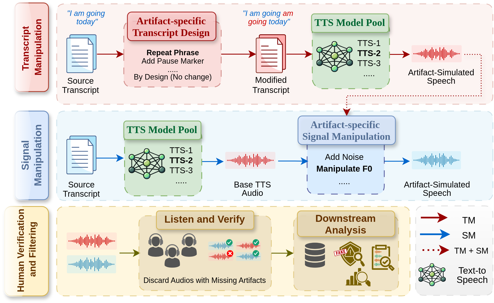

ArtiFake: A Taxonomy-Driven Approach for Simulating Perceptual Artifacts in Synthetic Speech
Abstract
The growing prevalence of synthetic speech on digital media has highlighted the need to move beyond binary deepfake detection and understand why speech sounds synthetic. Perceptually identifiable artifacts can provide important cues to the synthetic origin of speech. However, their systematic investigation remains challenging. Existing studies primarily rely on naturally occurring artifacts in synthetic speech. Such artifacts are unevenly distributed, occur without control, and are often characterized through subjective descriptions that lack consistent terminology. To address these limitations, we introduce ArtiFake, a taxonomy-driven framework for systematically simulating perceptually identifiable artifacts in synthetic speech. We first develop a structured taxonomy that systematically categorizes perceptually identifiable artifacts. Guided by this taxonomy, we design targeted simulation strategies based on transcript-level and signal-level manipulations. These strategies enable the controlled introduction of specific artifacts into speech samples. Using this framework, we construct the ArtiFake dataset, comprising approximately 10k audio samples spanning 10 distinct artifact classes. Furthermore, we investigate the capabilities of recent audio-language models to recognize and characterize these artifacts, revealing the limited understanding of these models. By enabling controlled artifact simulation and more balanced representation across artifact classes, ArtiFake lays the foundation for systematic artifact-level analysis, perceptually grounded evaluation, and the development of explainable audio deepfake detection systems..
Audio Samples
Demo samples from each of the 10 categories. Click a category to expand it and listen to its samples.
Methodology
